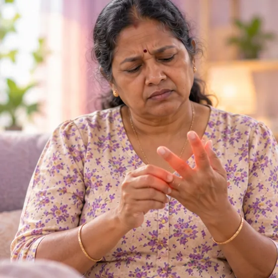

Lupus
An autoimmune condition where the body's defence system can affect many parts of the body
What it is
In lupus (SLE), the body's defence system wrongly attacks its own healthy parts, such as skin, joints, kidneys and blood. It can flare and then settle.
- Skin, joints, kidneys, blood
- Often young women
- Tired, sore joints, rash
- Which doctor
- Rheumatologist; family doctor
- Common in
- Mostly women, often from young adulthood
- Contagious
- No
- Course
- Long-term; it usually has flares and calm periods, and needs regular doctor care
Common signs

Tired all the timeFatigue 
Red rashRash 
Fever, feeling hotFever (pyrexia) 
Hair coming outHair loss (alopecia) Painful mouth soresAphthous ulcer 
Stiff, swollen fingersFinger joint stiffness
Why it happens

The cause is not fully knownIdiopathic
Other causes
- The immune system attacks the body's own healthy tissue
- Genes, hormones and the environment may all play a part
- Sunlight, infections and some medicines can bring on a flare
See a doctor first if
- Chest pain or trouble breathing: call 999
- Stroke signs such as face drooping, arm weakness or speech trouble, or a fit: call 999
- Swollen legs or face, or foamy or dark urine: see a doctor soon
- Fever, new rash or sudden bad headache: see a doctor soon
- A swollen, painful leg, or pregnancy with lupus: tell your doctor
If any apply, please see a doctor before a session.
This page is general information. Please keep taking your normal medicine and keep seeing your doctor.
Keep taking your normal medicine and keep seeing your doctor. Our session is a gentle support and does not replace medical care.
Looking after yourself

Protect yourself from the sunSun protection 
Ask your pharmacistPharmacist advice
More ways to look after yourself
- Keep seeing your doctor and keep taking your prescribed medicine
- Rest when tired, and do gentle activity when you feel able
- Do not smoke, and ask your doctor about vaccines and infections
Tell your therapist
- A kidney or liver condition
- Pregnancy
- Blood-thinning medicine
- A blood clot or a new swollen leg
- Fever or an active infection
- Broken, red or sore skin
Your therapist will go through this with you before starting.
Questions and answers
What is Lupus?
An autoimmune condition where the body's defence system can affect many parts of the body. In lupus (SLE), the body's defence system wrongly attacks its own healthy parts, such as skin, joints, kidneys and blood. It can flare and then settle.
What are the common signs of Lupus?
Tired all the time · Red rash · Fever, feeling hot · Hair coming out · Painful mouth sores · Stiff, swollen fingers
Why does Lupus happen?
The cause is not fully known
How can I look after myself with Lupus?
Protect yourself from the sun · Ask your pharmacist
Can an AI Body Master session help with Lupus?
A session is gentle, needle-free meridian support for your wellbeing. It does not treat or cure Lupus and never replaces your medicine or your doctor. Tell your therapist about it before the session starts.
Related conditions
References: General information based on public health sources such as Mayo Clinic, NHS, Cleveland Clinic and NCBI StatPearls.
Page updated: 2026-11-09